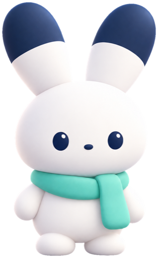

A small companion that lives on your Mac's desktop.
It remembers, reminds and keeps watch, plays a game with you, and your AI agents can talk to it.
See Sidefolk on GitHubVersion 0.1.0 isn't released yet. macOS 15 or later, Apple silicon.